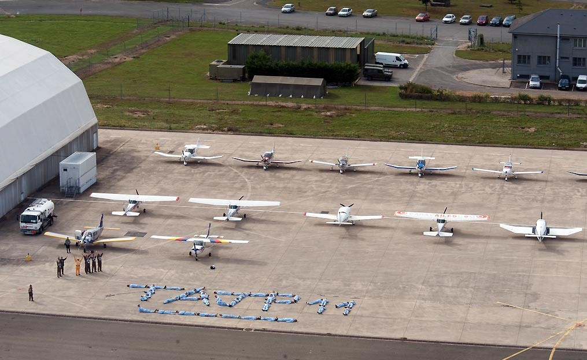
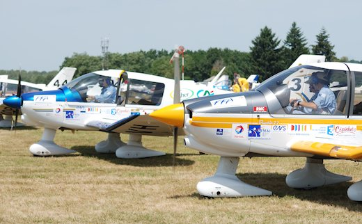

Le Tour Aérien des Jeunes Pilotes est un stage d’été organisé par la Fédération Française Aéronautique.
Une trentaine de jeunes âgés de 18 à 24 ans choisis se lancent chaque année dans cette aventure qui dure 15 jours
(à partir du mois de juillet jusqu'à fin août). Chaque jour, nos novices effectuent une navigation
dont la qualité est notée par nos bénévoles (habilités par la FFA). Le facteur principal est la précision
du suivi de la trajectoire imposée pour le vol ; pour cela, les bénévoles disposent des tracés d’un GPS enregistreur
embarqués dans l’avion du candidat.
Le Tour Aérien des Jeunes Pilotes est une excellente aventure où les jeunes sillonnent
la France et vivent une expérience aéronautique très enrichissante. Par ailleurs cet événement est bénéfique pour faire
la promotion de notre passion pour
l’aviation auprès du grand public.
On commence par une vérification météorologique suivi d'un briefing sur la procédure de départ et d'arriver.
Les avions décollent toute les 2 minutes et lorsque l'ensemble des vols touche à sa fin, les bénévoles
présentent le plan de vol du lendemain. Pour finir, un moment de partage est organisé entre les jeunes pilotes,
nos bénévoles ainsi que le public venu observer l'événement.
Premier vol pour l'un de nos candidats à la formation.
 
Notre flotte et notre équipe composée de nos bénévoles et nos jeunes pilotes lors de la 11ème édition
du tour aérien des jeunes pilotes à notre aéroclub.
Vous êtes curieux ou bien votre rêve est de devenir pilote, venez tenter l'expérience avec l'équipe pour vous faire découvrir
nos installations, notre flotte et vous transmettre le goût pour l'aéronautique.